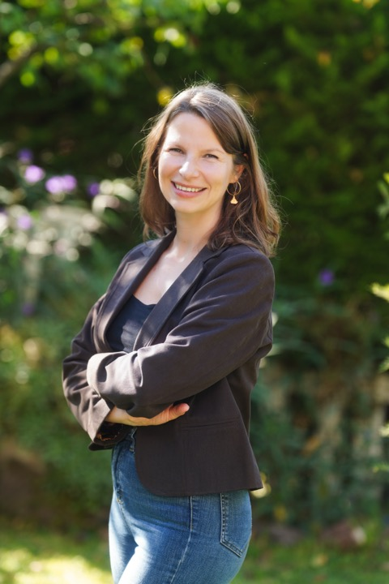

(Gyulfie Rushenova Salieva Alp)
Urban Researcher & PhD Şehir Araştırmacısı & Doktor
Smart Cities · Digital Divide · GIS Akıllı Şehirler · Dijital Uçurum · CBS
I'm an urban researcher with a PhD from Istanbul Technical University, specializing in digital transition, digital divide challenges, and their reflections on the urban environment. My work spans sustainable and smart cities, the digitalization of urban planning practices, and Geographic Information Systems (GIS).
İstanbul Teknik Üniversitesi'nde doktorasını tamamlamış bir şehir araştırmacısı. Dijital dönüşüm, dijital uçurum ve bu süreçlerin kentler üzerindeki etkileri başlıca çalışma alanları arasında yer alıyor. Sürdürülebilir ve akıllı şehirler, şehir planlamasının dijitalleşmesi ve Coğrafi Bilgi Sistemleri (CBS) üzerine araştırmalar yürütüyor.
I completed my master's degree at Politecnico di Milano in Urban Planning and Policy Design, where my thesis explored the Cittaslow movement across Italy and Turkey. Earlier, I earned my bachelor's degree in Urban and Regional Planning from Istanbul Technical University, with an exchange semester at Nicolaus Copernicus University in Poland.
Yüksek lisansını Milano Politeknik Üniversitesi'nde Şehir Planlama ve Politika Tasarımı üzerine tamamladı; tezinde İtalya ve Türkiye'deki Cittaslow hareketini karşılaştırmalı olarak ele aldı. Lisans eğitimini İTÜ Şehir ve Bölge Planlama bölümünde aldı; bu dönemde Polonya'da Nicolaus Copernicus Üniversitesi'nde Erasmus öğrencisi olarak bulundu.
Doctor of Philosophy (PhD) Doktora
Istanbul Technical University
2017 – 2024
Urban and Regional Planning Şehir ve Bölge Planlama
Master of Science (MSc) Yüksek Lisans
Politecnico di Milano
2014 – 2016
Urban Planning and Policy Design Şehir Planlama ve Politika Tasarımı
Exchange Program (Erasmus) Değişim Programı (Erasmus)
Uniwersytet Mikołaja Kopernika w Toruniu
2011 – 2012
Biology and Earth Sciences Biyoloji ve Yer Bilimleri
Bachelor's Degree Lisans
Istanbul Technical University
2007 – 2013
Urban and Regional Planning Şehir ve Bölge Planlama
Loading publications… Yayınlar yükleniyor…
View all on Google Scholar → Tümünü Google Scholar'da gör →
The Booming Growth of Coworking Spaces During the COVID-19 Pandemic in Turkey
European Narratives on Remote Working and Coworking During the COVID-19 Pandemic: A Multidisciplinary Perspective (pp. 97-106). Springer Nature Switzerland.
İşletmeler Düzeyinde Dijital Bölünme: Avrupa ve Türkiye'deki İşletmelerin Dijital Dönüşümünü Etkileyen Faktörleri Anlamak
Dijital Bölünmenin Kentlerde Yenilikçi Endüstrilerin Mekansal Dağılımı Üzerindeki Etkisi: Türkiye Örneği
Türkiye'deki Dijital Eşitsizlikleri Bölgesel Düzeyde Ölçmek İçin Bir Yöntem Denemesi
Türkiye'deki Bölgesel Gelişmişlik Farklılıklarını Dijital Gelişmişlik Endeksi Üzerinden Okumak
Digital Divide influence on the Spatial Distribution of Innovative Industries in Cities, The Case of Türkiye
Exploring Digital Divide Influence on Regional Development Differences in Türkiye
Mapping Spatial Patterns of Co-working Spaces in Europe
Ph.D Thesis (2024) Doktora Tezi (2024)
A Digital Transition Roadmap for Türkiye: Bridging the Digital Divide at National, Urban/Regional, and Enterprise Levels
MSc Thesis (2016) Yüksek Lisans Tezi (2016)
Cittaslow: Fluctuating Between Improvement and Commodification of 'Quality of Life' — Two Case Studies: Abbiategrasso and Seferihisar
Istanbul Technical University: Special Thesis Award
A special award given to the selected thesis by the university Üniversite tarafından seçilen teze verilen özel ödül
2025
YÖK: 100/2000 CoHE Doctoral Scholarship
4-year doctoral scholarship 4 yıllık doktora bursu
2017
Politecnico di Milano: Merit-Based (Gold) Scholarship
2-year master's scholarship 2 yıllık yüksek lisans bursu
2014
CitationsAtıf
PublicationsYayın
h-index
i10-index
Researcher Araştırmacı
COST Action CA18214 – The Geography of New Working Spaces and the Impact on the Periphery COST Action CA18214 – Yeni Çalışma Alanlarının Coğrafyası ve Çevre Üzerindeki Etkisi
2019 – 2023
Researcher Araştırmacı
ITU Scientific Research Project – The Rise of Coworking Spaces in Turkey and Their Social, Economic and Spatial Impacts İTÜ Bilimsel Araştırma Projesi (BAP) – Türkiye'de Paylaşımlı Ofis Alanlarının Yükselişi ve Sosyal, Ekonomik ve Mekansal Etkileri
2022 – 2023
GIS Specialist CBS Uzmanı
Netcad Yazılım A.Ş.
October 2016 – October 2017 · Istanbul, Turkey Ekim 2016 – Ekim 2017 · İstanbul
GIS consulting for municipalities, training on digital maps, PostgreSQL database management, and geospatial data processing. Belediyelere CBS danışmanlığı, dijital harita eğitimleri, PostgreSQL veritabanı yönetimi ve mekansal veri işleme.
Urban Planner Şehir Plancısı
Izmit Municipality İzmit Belediyesi
August 2012 – August 2014 · Izmit, Turkey Ağustos 2012 – Ağustos 2014 · İzmit
Urban development project planning, master plan drawing, stakeholder coordination, field investigation, and GIS digitalization of land use plans. Kentsel gelişim projelerinin planlanması, nazım imar planı çizimi, paydaş koordinasyonu, saha araştırmaları ve arazi kullanım planlarının CBS ortamına aktarılması.